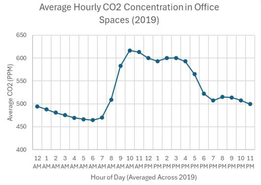

IEQ Dashboard
Empower your facilities team with live, interactive insights on air quality and noise – all in one intuitive dashboard

Empower your facilities team with live, interactive insights on air quality and noise – all in one intuitive dashboard
Facility managers often lack real-time, actionable insights into indoor office comfort, resulting in inefficient building management. Static HVAC schedules fail to adjust to actual occupancy, causing CO₂ spikes during peak office hours and leading to discomfort, complaints, and wasted energy.
Additionally, sound pressure levels vary significantly across zones, with some areas experiencing excessive noise that disrupts focus and productivity.
There is a need for data-driven tools that enable facility managers to proactively address air quality and noise issues, helping to improve occupant comfort and reduce operational inefficiencies.
A multi-method approach to uncover insights about how building occupants and facility managers experience and respond to indoor environmental quality data.
These guiding questions shaped our investigation into how building stakeholders engage with indoor environmental quality data and what design interventions can enhance comfort and operational efficiency:
Working with real sensor data from the IEQ Lab's SAMBA system
Our dashboard visualizes data from a network of sensors monitoring a real office building throughout 2019, capturing the complex interplay of environmental factors that shape our indoor experiences.
The SAMBA system tracked 10 key variables every 5 minutes across multiple floors and zones, creating a rich dataset of over 2.6 million data points.
Buildings account for nearly 40% of global energy consumption, yet many fail to provide basic comfort. By visualizing this data, we reveal patterns that can help optimize both occupant experience and energy efficiency.
Your office breathes with its occupants. Like a living organism, CO₂ levels rise and fall with the rhythm of the workday. During morning surges (9–12PM) and afternoon waves (1–3PM), concentrations swell to 575ppm—a 28% respiratory spike from the resting rate of ~450ppm.
Your HVAC operates like a metronome—steady, unchanging—while your office breathes like a marathon runner. This mismatch wastes 20–30% in energy while leaving employees gasping for cognitive clarity.
